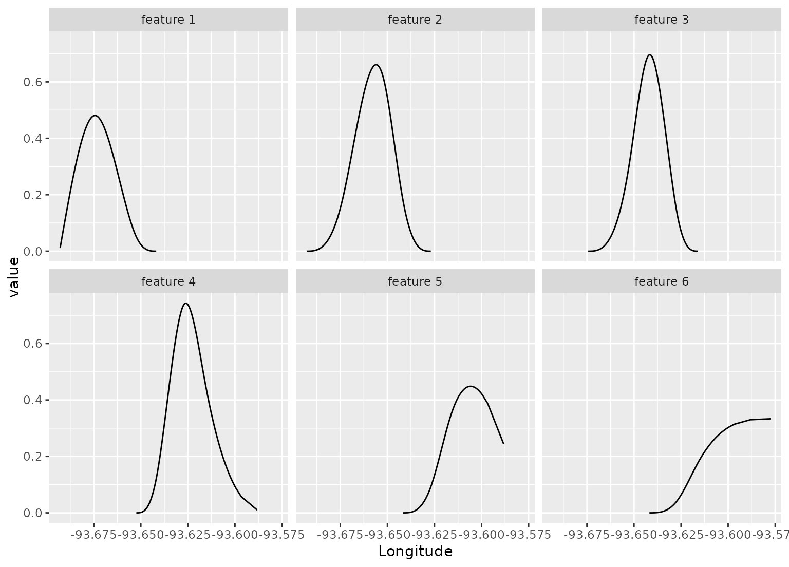

step_spline_natural() creates a specification of a recipe step that
creates natural spline features.
Usage
step_spline_natural(
recipe,
...,
role = "predictor",
trained = FALSE,
deg_free = 10,
complete_set = FALSE,
options = NULL,
keep_original_cols = FALSE,
results = NULL,
skip = FALSE,
id = rand_id("spline_natural")
)Arguments
- recipe
A recipe object. The step will be added to the sequence of operations for this recipe.
- ...
One or more selector functions to choose variables for this step. See
selections()for more details.- role
For model terms created by this step, what analysis role should they be assigned? By default, the new columns created by this step from the original variables will be used as predictors in a model.
- trained
A logical to indicate if the quantities for preprocessing have been estimated.
- deg_free
The degrees of freedom for the natural spline. As the degrees of freedom for a natural spline increase, more flexible and complex curves can be generated. This step requires at least two degrees of freedom.
- complete_set
If
TRUE, the complete basis matrix will be returned. Otherwise, the first basis will be excluded from the output. This maps to theinterceptargument of the corresponding function from the splines2 package and has the same default value.- options
A list of options for
splines2::naturalSpline()which should not includex,df, orintercept.- keep_original_cols
A logical to keep the original variables in the output. Defaults to
FALSE.- results
A list of objects created once the step has been trained.
- skip
A logical. Should the step be skipped when the recipe is baked by
bake()? While all operations are baked whenprep()is run, some operations may not be able to be conducted on new data (e.g. processing the outcome variable(s)). Care should be taken when usingskip = TRUEas it may affect the computations for subsequent operations.- id
A character string that is unique to this step to identify it.
Details
Spline transformations take a numeric column and create multiple features that, when used in a model, can estimate nonlinear trends between the column and some outcome. The degrees of freedom determines how many new features are added to the data.
This spline is a piece-wise cubic polynomial function.
If the spline expansion fails for a selected column, the step will
remove that column's results (but will retain the original data). Use the
tidy() method to determine which columns were used.
Tidying
When you tidy() this step, a tibble is returned with
columns terms and id:
- terms
character, the selectors or variables selected
- id
character, id of this step
Tuning Parameters
This step has 1 tuning parameters:
deg_free: Spline Degrees of Freedom (type: integer, default: 10)
Examples
library(tidyr)
library(dplyr)
library(ggplot2)
data(ames, package = "modeldata")
spline_rec <- recipe(Sale_Price ~ Longitude, data = ames) %>%
step_spline_natural(Longitude, deg_free = 6, keep_original_cols = TRUE) %>%
prep()
tidy(spline_rec, number = 1)
#> # A tibble: 1 × 2
#> terms id
#> <chr> <chr>
#> 1 Longitude spline_natural_g2f22
# Show where each feature is active
spline_rec %>%
bake(new_data = NULL,-Sale_Price) %>%
pivot_longer(c(starts_with("Longitude_")), names_to = "feature", values_to = "value") %>%
mutate(feature = gsub("Longitude_", "feature ", feature)) %>%
filter(value > 0) %>%
ggplot(aes(x = Longitude, y = value)) +
geom_line() +
facet_wrap(~ feature)
